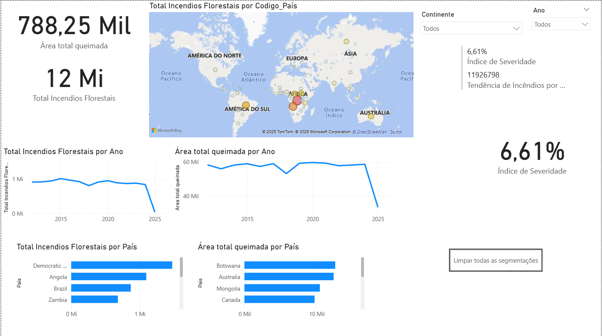
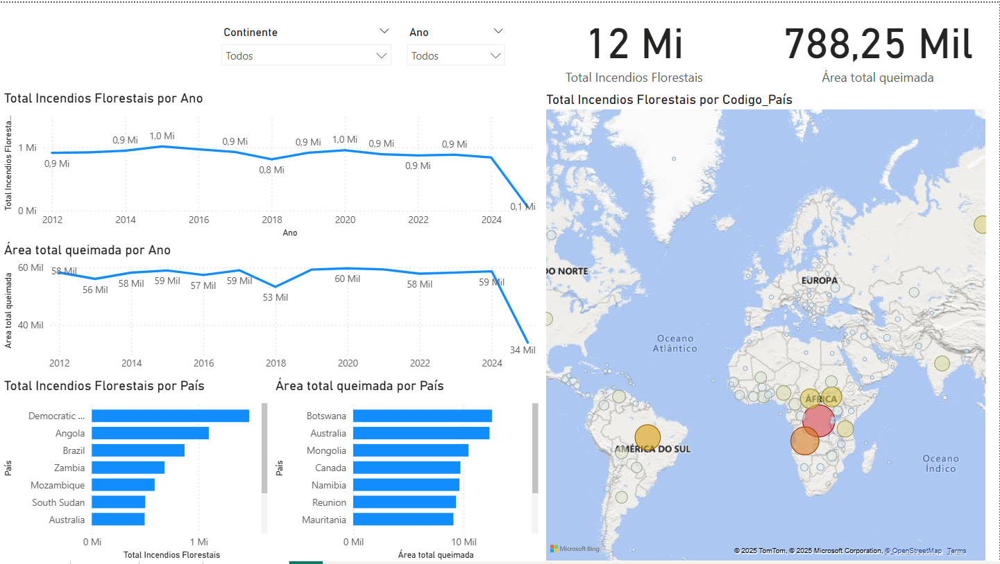
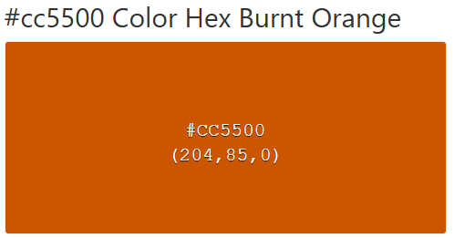

Análise Global de Incêndios Florestais: Tendências e Impactos.
Desvende os padrões por trás dos incêndios florestais! Este projeto traz uma análise detalhada dos focos de incêndio ao redor do mundo, revelando tendências, impactos ambientais e regiões mais afetadas. Com dados estruturados e visualizações interativas, é possível entender melhor a frequência e a gravidade desses eventos.
Detalhes do Projeto
Este projeto foi desenvolvido para visualizar e analisar a distribuição geográfica e a severidade dos incêndios florestais ao redor do mundo. Utilizando um dashboard interativo no Power BI, o objetivo foi identificar padrões climáticos e ambientais que influenciam esses desastres. Através da análise, foi possível destacar quais países são mais afetados, a evolução dos incêndios ao longo dos anos e a média de área queimada por evento. Países como República Democrática do Congo, Angola e Brasil estão entre os mais impactados, enquanto Botsuana, embora com poucos incêndios registrados, apresenta uma das maiores médias de área queimada por evento.
A análise comparativa entre continentes revelou que África e América do Sul são as regiões com maior incidência de incêndios, enquanto Europa e Caribe, embora com menos ocorrências, enfrentam episódios mais severos em determinados períodos. Para a construção desse projeto, utilizei Power BI para modelagem de dados, criação de medidas em DAX e visualização interativa, e o Figma para o design do dashboard, com o objetivo de garantir uma apresentação clara, acessível e funcional para os usuários interessados em entender os impactos globais dos incêndios florestais.
Confira mais detalhes no artigo completo no Medium e na publicação no LinkedIn.
Galeria de Imagens

Rascunho inicial do projeto.

Escolha da localização dos visuais do dashboard.

Cor escolhida para representar o tema.
 Resultado final do dashboard.
Resultado final do dashboard.